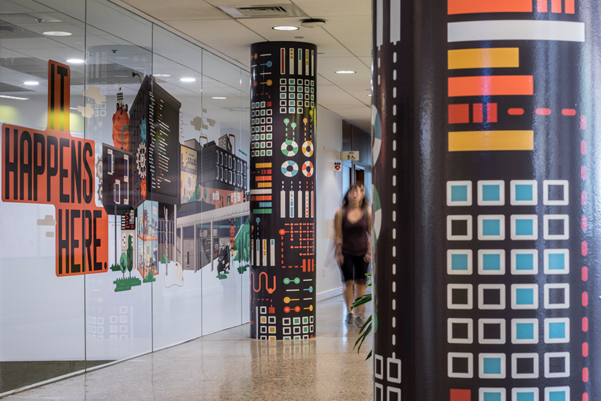

Computer Science Research Groups
Through many research and educational partnerships, University Of Ghana faculty exercise daily leadership in the fields of information technology, networking, cybersecurity, machine learning, natural language processing, speech recognition, robotics and more. They work closely with nonprofit agencies and industry clients to develop and mature technologies from concept through delivery to end-users. Our diverse interdisciplinary research also extends into areas not traditionally considered part of computer science. We invite you to explore our department websites to learn more about our research.